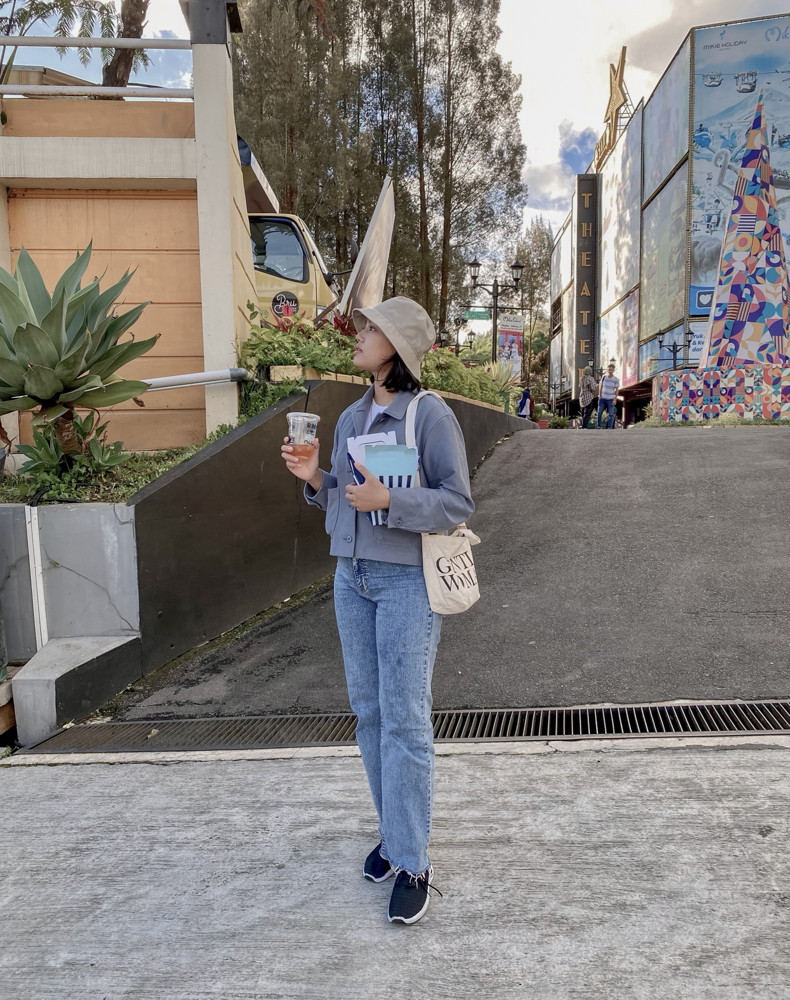
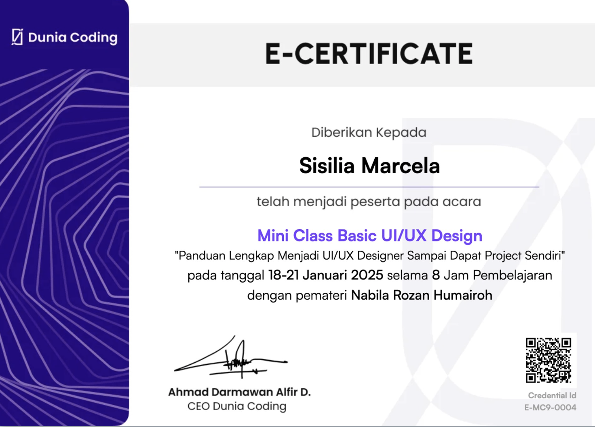

Sisilia Marcela

Summary
Information Systems graduate with experience in finance, accounting,
and administration. Completed a UI/UX course and currently working as a web
developer.
Committed to continuous growth in technology and design through
various projects.
Education
-
Dharma Bakti Senior High School (2016-2019)
Lubuk Pakam, North Sumatra
-
Bachelor of Computer Science, Information Systems - University of Pelita
Harapan (2019-2024)
Medan, North Sumatra
Work Experience
- PT Semestanustra Distrindo | Finance & Accounting Staff.
May 2021 - August 2022
-
Prepared daily journal entries and assisted in the monthly closing
process.
-
Prepared monthly and annual financial statements for the company.
-
Participated in internal and external audit processes, managing audit
findings and recommendations.
- CV Rizky Utama Mandiri | Administrative Staff.
Sept 2022 - Feb 2023
-
Entered purchase and sales data, including spare parts purchases and
sales.
-
Checked spare part inventory and visited spare part stores with the
warehouse manager to order needed items and make purchases.
-
Reviewed and ensured that receipts, cash inflows, and cash outflows
matched the items in the warehouse.
- PT Qansa Solusi Indonesia | Front-End Web Developer.
Marc 2025 - Present
- Develop and Implement User Interfaces
- Optimize Website Performance
- Cross-Browser and Device Compatibility
- Implement Front-End Frameworks
- Testing and Debugging
Skills
- Microsoft Office Suite: ⭐️⭐️⭐️⭐️⭐️
-
Financial & Administrative Management: ⭐️⭐️⭐️⭐️
- UI/UX Understanding: ⭐️⭐️⭐️
- Collaboration & Problem Solving: ⭐️⭐️⭐️⭐️
- Front-End Web Development: ⭐️⭐️⭐️
Awards and Certifications
- Figma UI UX Design Essentials. (January 2025)

- Mini Class Basic UI/UX Design

- Workshop Full Stack Donation Apps

Other